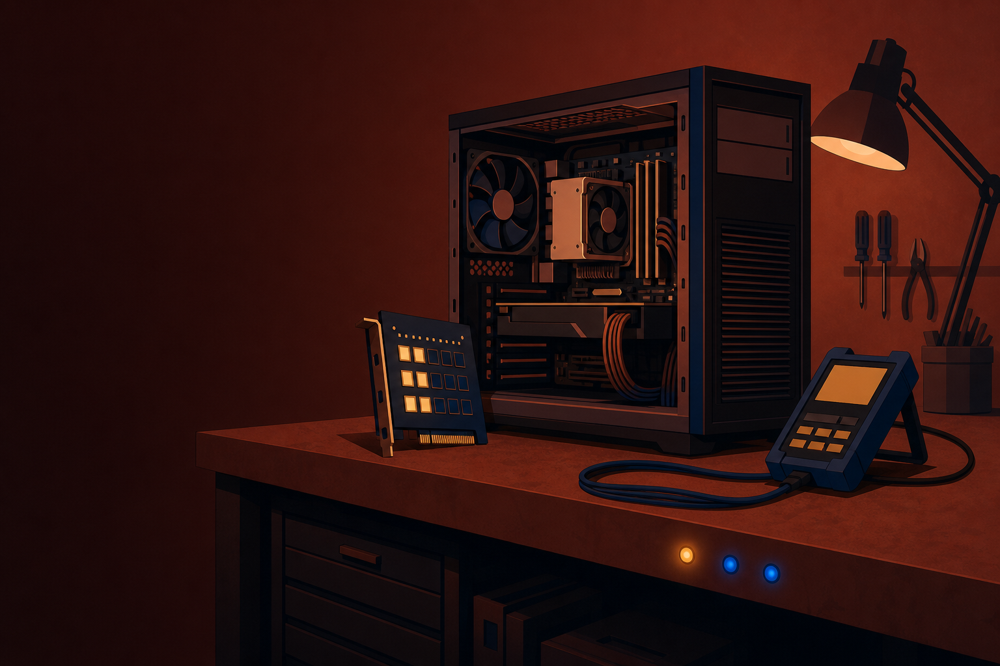
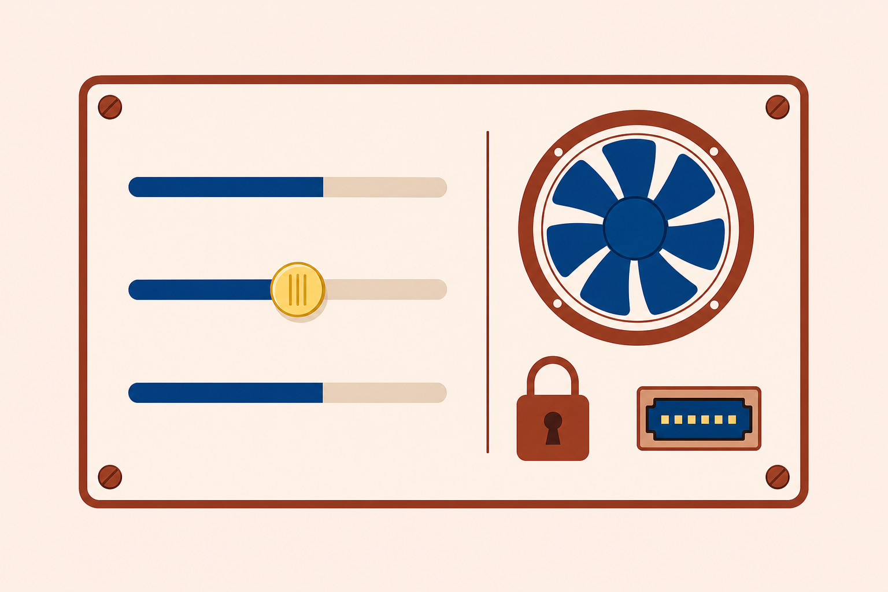
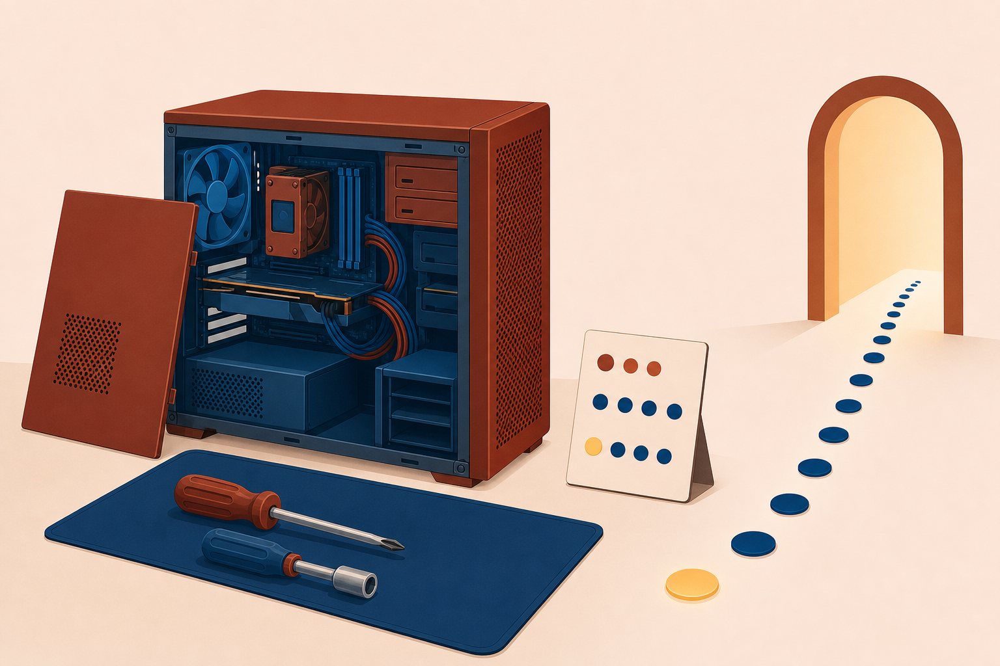

01
Trace
the boot chain from power to sign-in, one checkpoint at a time.

POST beeps, status LEDs, and firmware messages: the signals that turn a no-boot mystery into a closed ticket.
Start here: The fans spin, the lights glow, and Windows never appears. What would you check first?
the boot chain from power to sign-in, one checkpoint at a time.
BIOS/UEFI setup: boot order, passwords, fans, and Secure Boot.
power, disk, and display faults with the chapter 1 six-step method.
One no-boot PC rides the whole class. Every checkpoint we visit either clears it or convicts it.
The six steps from chapter 1 still drive.
With a partner: The bench check shows all three signals. Does the power supply stay on your suspect list?
PassFans spin, LEDs light
FailSilent, dark case
PassVendor logo appears
FailBeep code, or blank
PassThe OS starts loading
Fail“No boot device found”
PassSign-in screen
FailCrash screen or freeze
Test in order. A later checkpoint cannot pass while an earlier one fails.
Verify it feeds power.
Reseat and inspect it.
Prove it with a tester.
Watch for LEDs and fans.
One long, two short: a code, not a noise. The maker’s table says what it means.
No boot device found
Press F2 to enter Setup
Setup keys vary by maker: Esc, F10, F12, or another. Miss the window? Reboot and try again.
Basic input/output system. Keyboard only: the menus print their own key guide.
Unified extensible firmware interface. Mouse and keyboard, graphical, modern.
Both do the same job: configure the machine before any OS loads.
Ticket #4088: the firmware asked the flash drive for an OS it does not carry.
Logo, then “no boot device”
Boot order first, drive second
Setup: USB sits first
Eject stick, disk first
Two clean boots
$0 fix, lesson noted

Carries a digital signature.
Checks it against stored keys.
Three trends, one verdict: back up now.
SSD data is close to unrecoverable without specialist tools. Back up while the drive still answers.
OK
Failed
Swap this one only
OK
OK
RAID 0 warning: no redundancy. One lost disk ends the volume. It trades safety for speed.
The blue screen of death.
The spinning wait cursor.
A kernel panic on the console.
Check sensors, fans, the heat sink, blanking plates, dust, and room heat: in that order.
Hands off while hot: components heat up in operation. Let them cool before your fingers verify anything.
The coin cell feeds the real-time clock and preserves settings. Swap it.
Flashing can also be a faulty or overheating video card. Isolate it on a second computer.
With a partner: It shuts itself down, then powers back up later. Name your two best suspects, and the one thing you must do before touching the bulb.
List the four boot checkpoints in order, with one pass signal each.
A PC reports “No boot device found.” What do you check before replacing the drive?
One RAID bay glows red. What must happen before any disk moves?

Next step: Run the CertMaster labs: Resolve PC Hardware Support Tickets, then Troubleshoot a Malfunctioning Computer. Chapter 5 leaves the bench and follows the cable into networks.